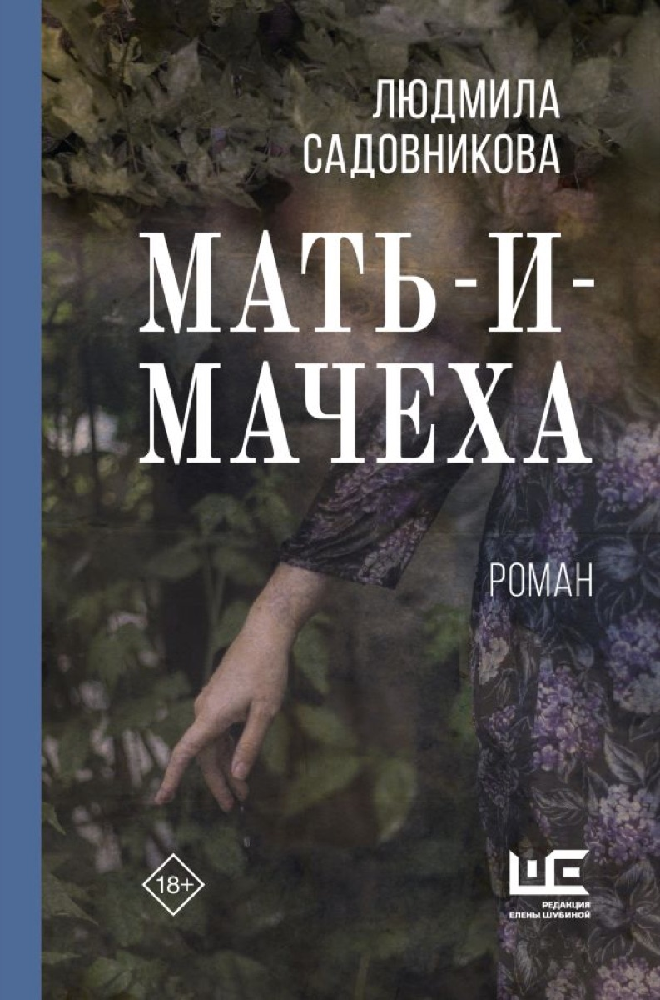

Основной список · 4
Мать-и-мачеха
Семейная история исследует материнство, вину и наследуемые способы молчать о травме.
Критика →Доказательства · 4
- Коммерсантъ
Самостоятельная рецензия - ReadRate
В октябрьской подборке - Собака.ru
В списке новых книг октября - Poetica
Независимый разбор рукописи до выхода книги
Проверено 09.11.2026. Источник даты не считается сигналом внимания.